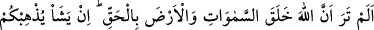
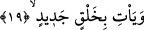

gecesi cehenneme muttali kılındığında etrafı çevrili bir yerde ateşin dokunmadığı bir
kimse görerek:
“Etrafı çevrili yerdeki şu adama nasıl oluyor da ateş dokunmuyor?” diye sordu.
Cebrail (a.s.) şöyle cevap verdi:
“Bu adam Hâtim Tâî’dir. Allah Teâlâ, cömertliği sâyesinde cehennem azâbını ondan
uzaklaştırmıştır.”
Sa‘dî der ki:
Şimdi her ne varsa eline alıp ihsan et
Yoksa yarın elinin arkasını ısırırsın
Garibi kapından nasipsiz çevirme
Seni de ilâhî kapıdan öyle garip çevirirler
Seni başkalarının kapısına muhtaç etmemiştir
Şükrâne olarak o garîbi kapından reddetme
Bugün tez elden hazîneyi fakir ve zayıflara ihsân eyle
Zira yarın o hazînenin kilidi senin elinde değildir.
19. Allah’ın gökleri ve yeri hak ile yarattığını görmedin mi? O dilerse sizi ortadan
kaldırır ve yepyeni bir halk getirir.
“Allah’ın gökleri ve yeri hak ile” bâtıl ve abes olarak değil, sonsuz bir hikmetle ve
yaratılması lâzım gelen en güzel tarzda “yarattığını görmedin mi?” Buradaki görme,
kalp gözüyle görmedir.
Muhâtap Hz. Peygamber olmakla berâber aşağıda gelecek olan “sizi ortadan
kaldırır” ifâdesinden de anlaşılacağı üzere maksad ümmeti, yâni ümmet-i dâvettir (yâni
müslüman olsun olmasın kendilerine gönderildiği bütün ümmetidir).
et-Te’vîlâtü’n-Necmiyye’de şöyle der: Cenab-ı Hak, burada Hz. Peygamber (s.a.)’in
rûhuna hitâb ediyor. Çünkü O’nun ilk yarattığı, Peygamber (s.a.)’in rûhudur. Gökleri ve
yeri daha sonra yaratmış ve rûh-i Muhammedî, onların yaratılışını görmüş, müşâhede
etmiştir. Buna göre “görmedin mi?” ifâdesi, ‘bilmedin mi?’ ya da ‘görmedin mi?’
mânâsındadır. Soru ise meselenin elbette öyle (takrir için) olduğunu gösteren bir soru
olup ‘elbette gördün’ anlamındadır.
Bahru’l-ulûm’da der ki: “Allah’ın göklerde ve yerdeki fiillerinin eserlerini görmedin
mi? Çünkü bu konuda o kadar fazla haber var ki, bunlar senin için müşâhede yerine
geçer.